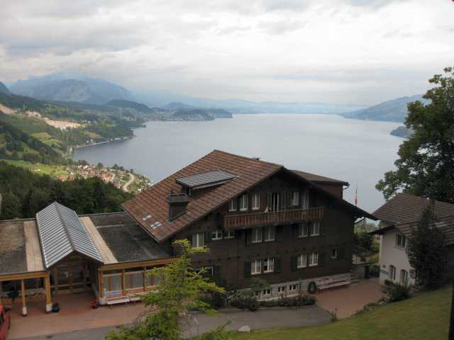
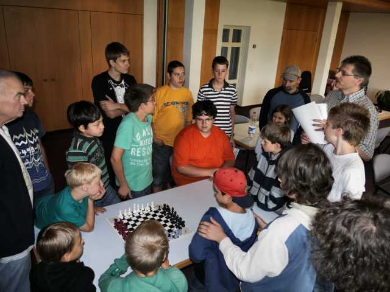

Der Thuner See ist einfach eine beeindruckende Kuliss!
Wer das Panoramabild in 1920x713 geniessen möchte, klickt hier.

Der morgendliche Blick aus unserer Unterkunft.

Markus Haag erklärt die Regeln für den Spielemehrkampf.

Turmbauen war eine beliebte Disziplin.

Auch Tandem gehörte zum Mehrkampf.

Alle waren froh und zufrieden.

Ein Blitzturnier durfte natürlich nicht fehlen.

Ali Habibi mit seinen Schützlingen.

Hier nochmals Ali, diesmal nur mit den Laufenburgern.
Dank wieder einmal an Markus Haag für die perfekte Organisation und das
freundliche Überlassen einiger Bilder.